StarHydro is a Java application for watershed analysis, which runs on standard Athena Solaris, standard Athena Linux, Windows XP and Mac OS X computers. In a browser go to http://web.mit.edu/star/hydro and click "Start" to open StarHydro.
Your system may prompt you to trust running this application; please click "Run" in the dialog box.
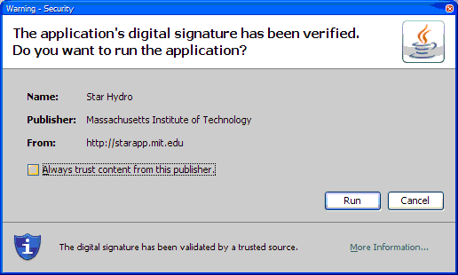
The StarHydro main screen will appear and request that you select one of the available maps. For this manual, we will select StarHydro_Coarse.
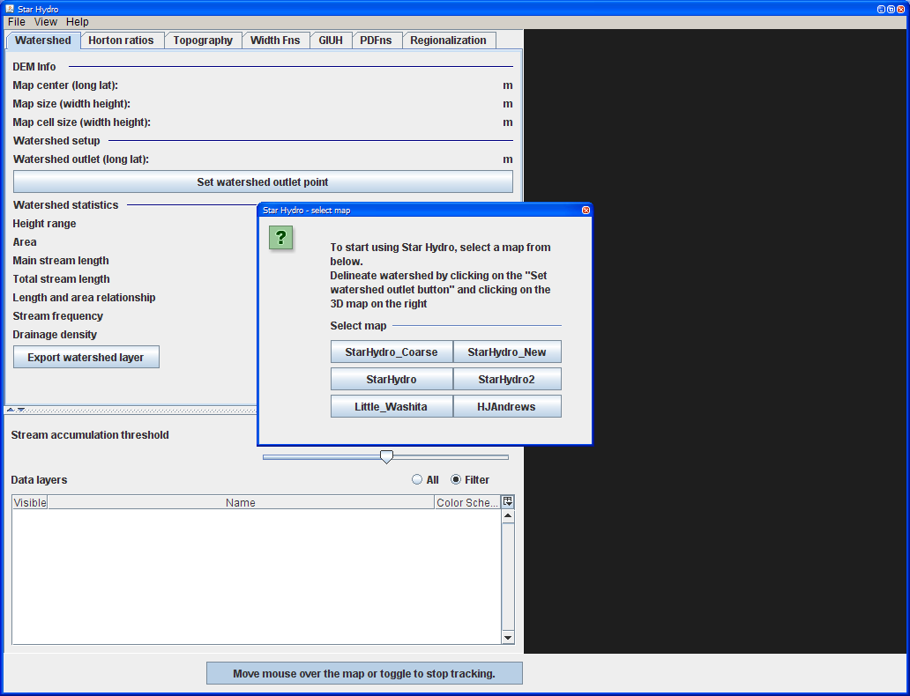
On the StarHydro main screen, start delineating watershed by selecting the Watershed tab and clicking Set watershed outlet point(1). To delineate watershed, click on the map, near a stream(2).
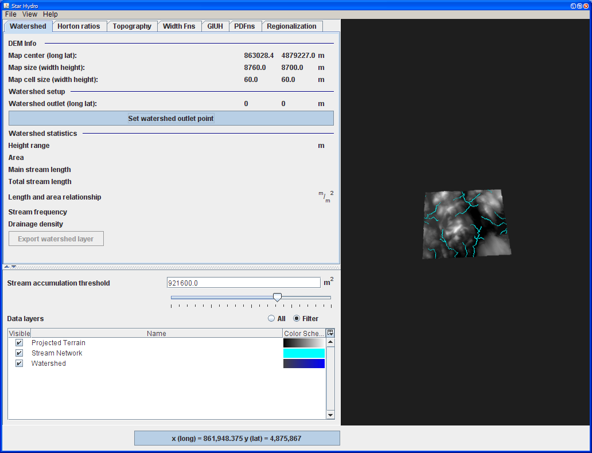
Watershed view consists displays information about terrain (DEM(3)) and watershed. Information presented includes watershed height range, area, main stream length, sum of all stream lengths, length and area relationship, stream frequency and drainage density.
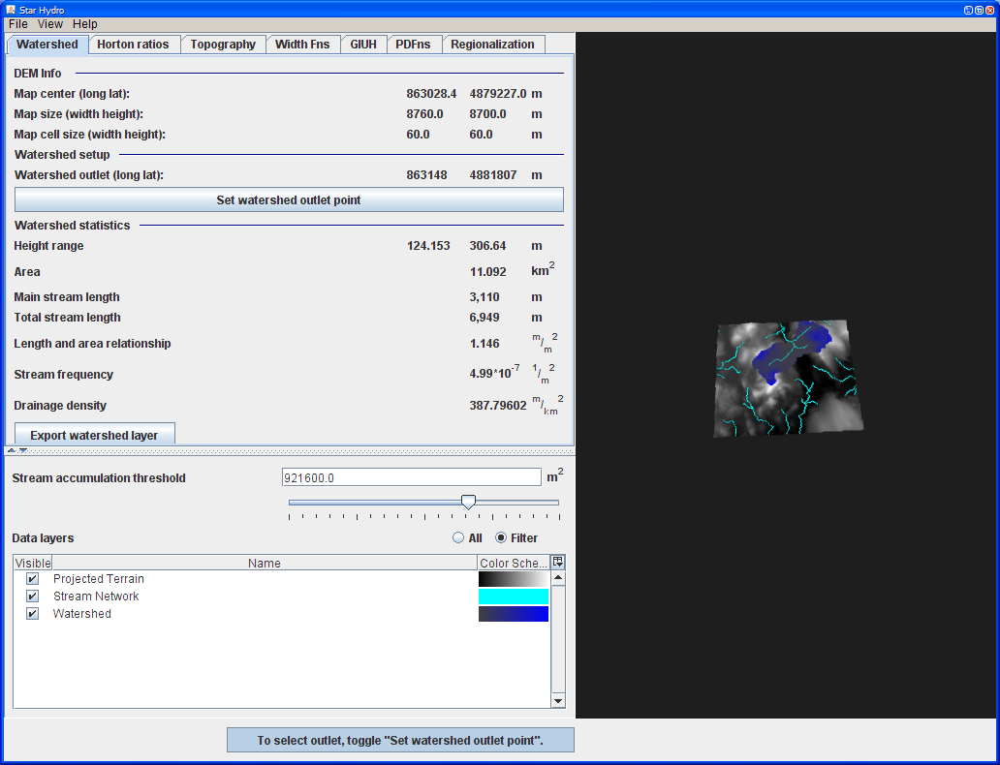
Double click on the map to add rain gauges. Save rain gauges will save the data as an excel file. To add rain gauges from Excel, switch from Gauges to Chart and click Load Rainfall data.
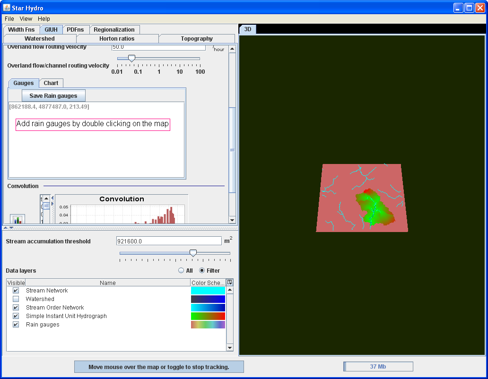
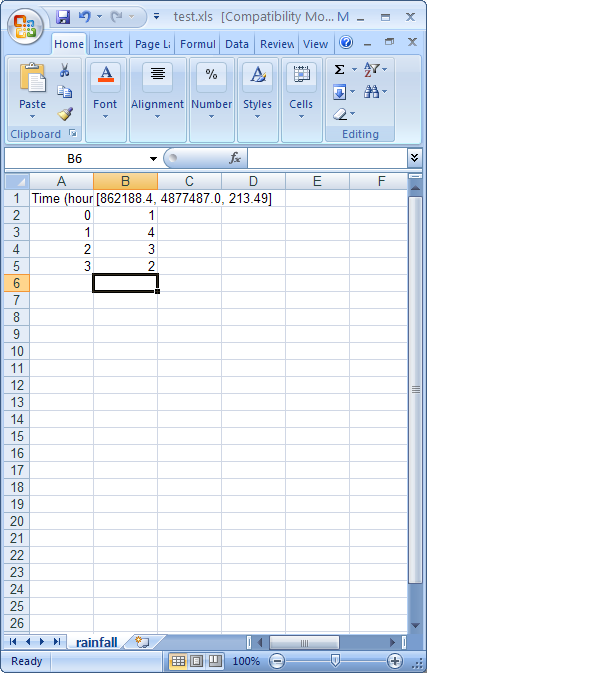
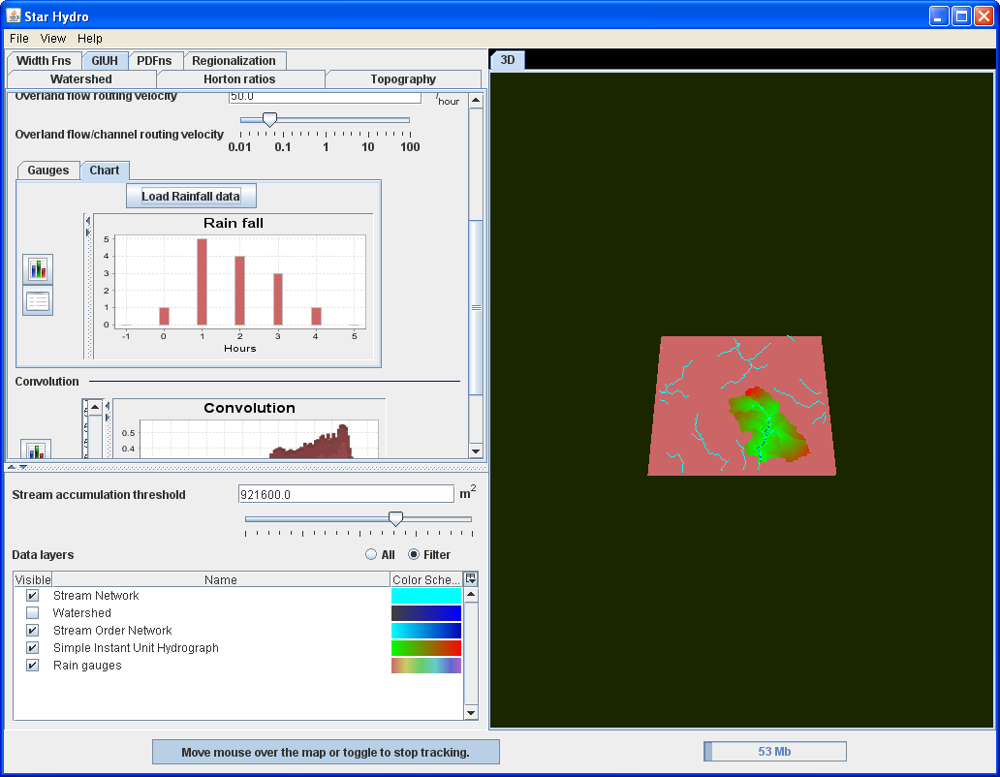
GIUH allows manipulation of Instant Unit Hydrograph by changing channel routing and overland routing velocities. The map on the right and GIUH are colored using Data Layers Color Schema(4). Modifying the stream threshold will result in changes in GIUH.
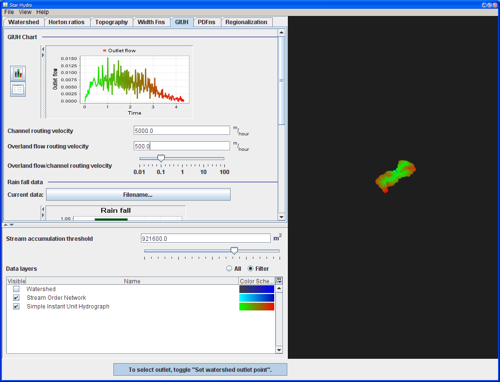
The convolution chart presents discharge at the watershed outlet. Convolution depends on defined rainfall and GIUH. To change rainfall, click on the button next to Current data. This will open a file dialog that will allow you to select one of predefined one of the existing rainfalls or create your own input file.
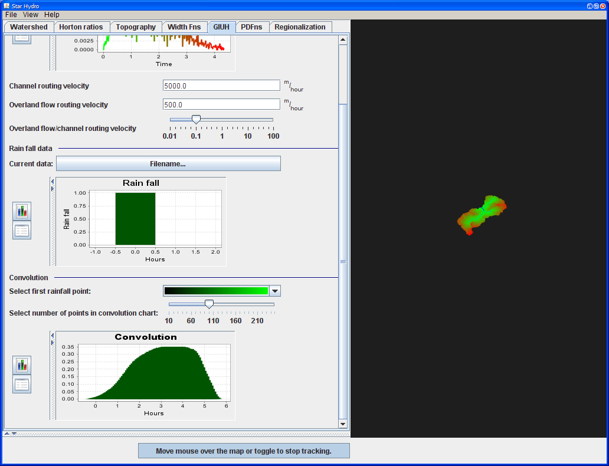
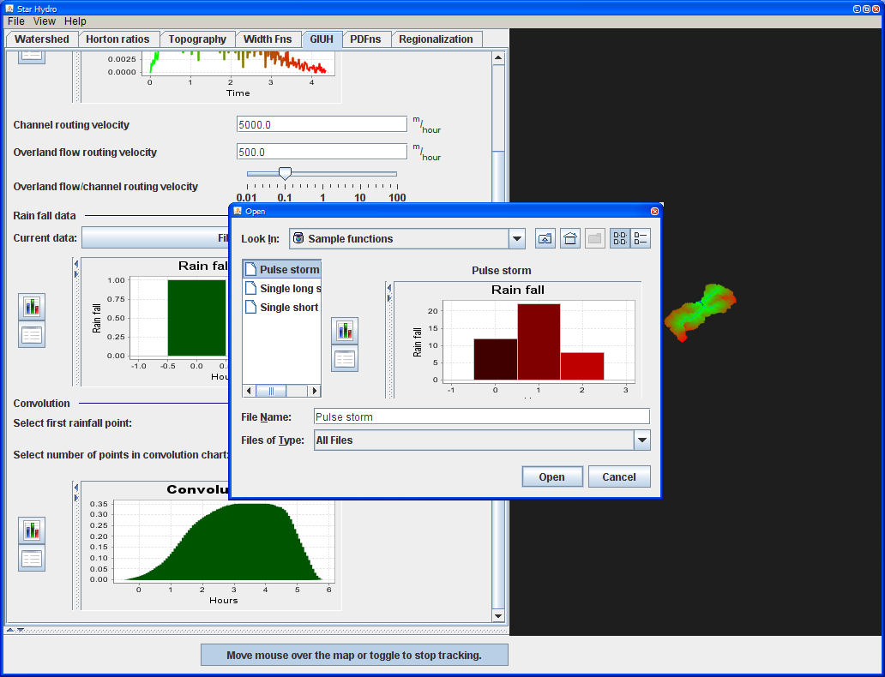
Modifying velocities or stream accumulation threshold will change GIUH and convolution chart.
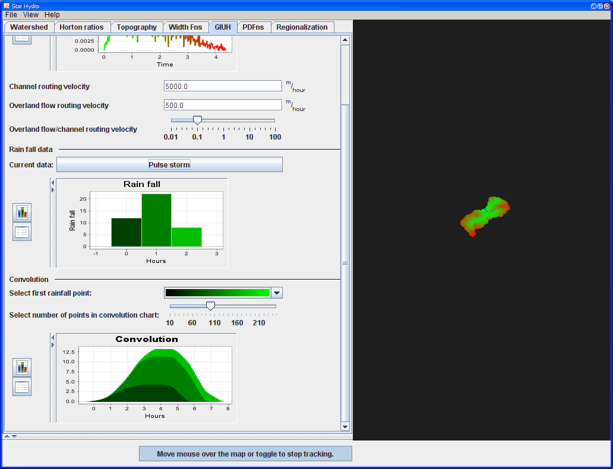